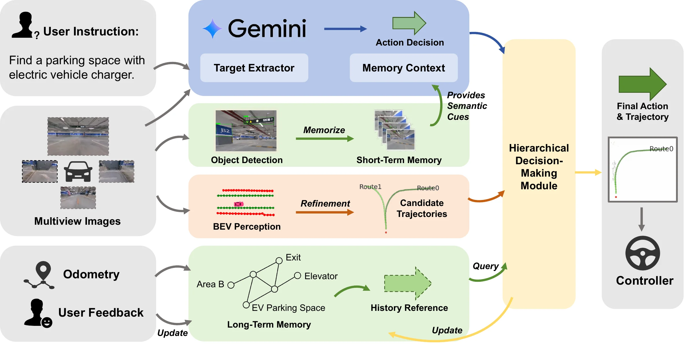
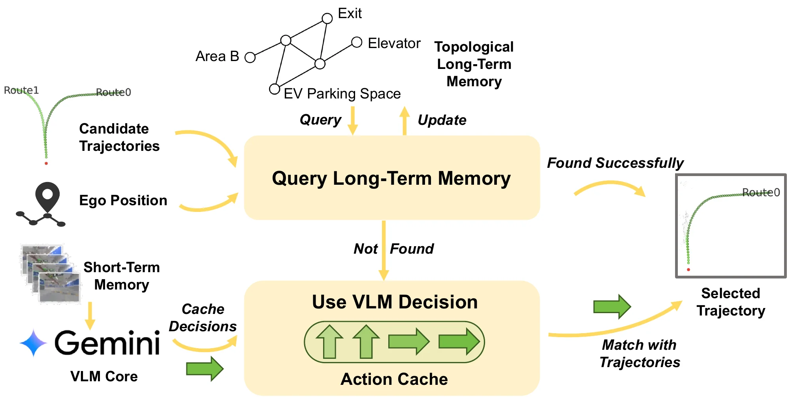
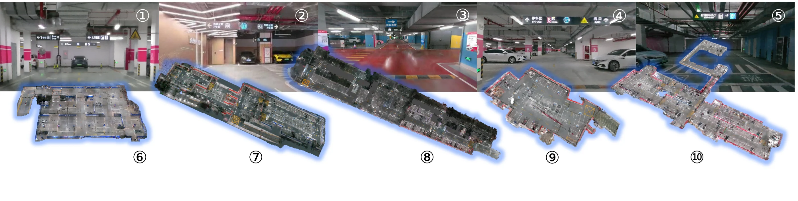
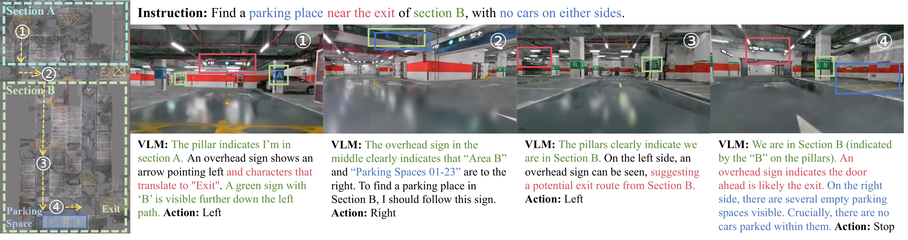
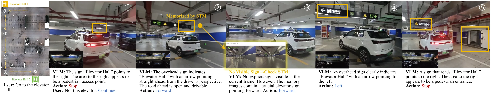
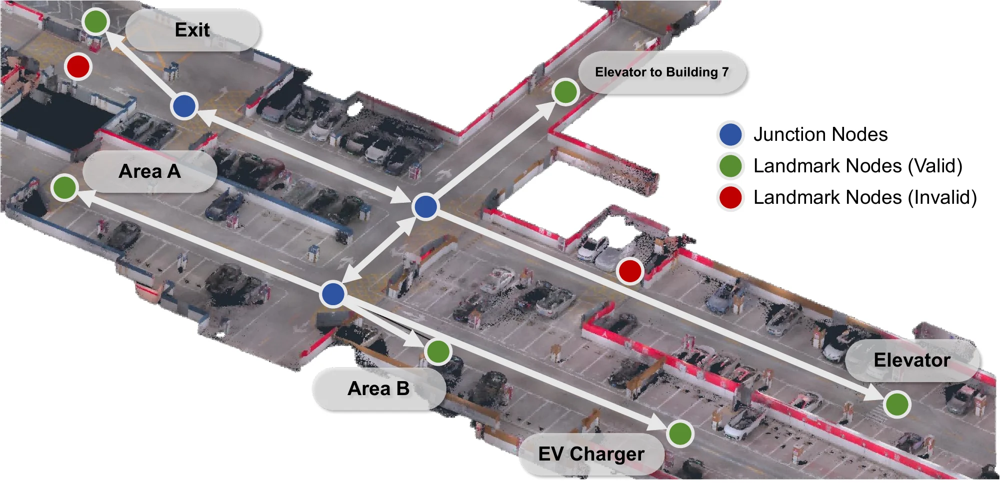
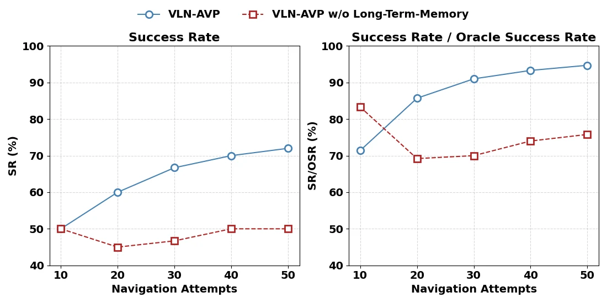

BEV trajectory proposals
Four surround-view cameras feed MapTR, producing vectorized lane centerlines and kinematically feasible candidate trajectories.
arXiv:2607.17767 Robotics 2026
1 Shanghai Jiao Tong University
2 Yinwang Intelligent Technology Co., Ltd.
✉ Corresponding author: qintong@sjtu.edu.cn
Overview
Existing Autonomous Valet Parking systems are difficult to scale to unseen environments and open-vocabulary targets because they typically rely on pre-built maps.
VLN-AVP combines the precise spatial perception of a Bird's-Eye-View model with the general intelligence of Vision-Language Models. A short-term perception memory retains semantic visual cues that may disappear between VLM queries, while a long-term topological memory learns stable navigation policies from past experience.
The framework removes the dependency on pre-built maps, interprets semantic environmental context in parking scenarios, and enables intuitive navigation from natural-language instructions. Experiments in simulation and on a real vehicle demonstrate substantial gains over VLN and autonomous-driving baselines.
System
Fast spatial perception keeps the vehicle drivable. Slower VLM reasoning supplies semantic direction. Hybrid memory connects what the vehicle sees now with what it has learned before.

Four surround-view cameras feed MapTR, producing vectorized lane centerlines and kinematically feasible candidate trajectories.
Grounding DINO detects signs at high frequency. A filtered image queue preserves critical cues across low-frequency VLM decisions.
A sparse graph stores junctions, landmarks, and successful routes, allowing repeat tasks to reuse reliable past experience.
Hybrid memory
The hierarchical decision module first queries long-term memory for a matching route. When no valid experience exists, it falls back to the latest VLM decision and maps that decision to a feasible trajectory.

Dataset & benchmark
Real underground garages are reconstructed as photorealistic, large-scale 3D environments using 3D Gaussian Splatting. Every episode includes a natural-language instruction, start, target, and ground-truth trajectory.
Dataset release planned
“Go to the exit.”
“Go to the elevator entrance.”
“Find a parking space with an electric vehicle charging port.”
Results
VLN-AVP leads both navigation task splits and transfers to continuous, real-time experiments on a real vehicle.
+15.5 points over the strongest autonomous-driving baseline.
Multi-stage, open-vocabulary demands in unseen garages.
30 trials across two underground parking garages.
| Task | SR | OSR | SPL | NE |
|---|---|---|---|---|
| Regular | 65.2 | 74.6 | 43.1 | 13.2 m |
| Challenging | 45.4 | 59.7 | 33.2 | 18.4 m |
| Method | SR | OSR | SPL | NE |
|---|---|---|---|---|
| Full VLN-AVP | 65.2 | 74.6 | 43.1 | 13.2 m |
| w/o LTM | 56.8 | 70.4 | 36.5 | 15.6 m |
| w/o LTM & STM | 42.2 | 49.3 | 30.9 | 23.2 m |
Qualitative studies
Each case exposes the visual evidence, language reasoning, and selected action instead of presenting navigation as a black box.
The agent follows a multi-stage instruction to find an empty parking place near the exit of Section B with no cars on either side.

After stopping at the wrong elevator hall, the vehicle continues on request. Short-term memory preserves a sign that is no longer visible in the current frame.

Learning over episodes
Across repeated attempts, landmark and route memories become more reliable. The full system improves both success rate and precise stopping, while the variant without long-term memory shows no clear learning trend.


Citation
The paper is available on arXiv. Code and the dataset will be released later.
arXiv:2607.17767@article{li2026vlnavp,
title = {VLN-AVP: Zero-Shot Vision-Language Navigation
with Hybrid Long-Short-Term Memory for
Autonomous Valet Parking},
author = {Li, Yijian and Mu, Xiangru and Li, Changze and
Shi, Hantian and Cai, Jiyuan and Cai, Jia and
Liu, Xiaoxue and Sun, Yajing and Yang, Ming and
Qin, Tong},
journal = {arXiv preprint arXiv:2607.17767},
year = {2026}
}